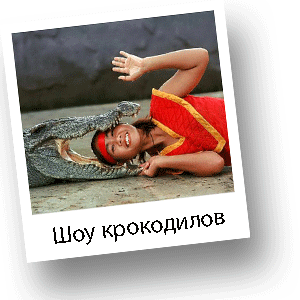

Сафари-парк в Хуа Хине

Поездка в сафари-парк не оставит равнодушным ни взрослых ни детей. Прекрасная возможность весело провести время и развлечься. Сафари-парк расположен в южной части города Хуа Хин. Вашему вниманию будет представлена возможность покататься на слонах и покрмить этих величественных животных. Вы увидите необыкновенные шоу-программы, в которых принимают участие змеи, крокодилы, слоны.

Вы помотрите, насколько удивительные трюки может исполнить, казалось бы, огромный и неповортливый слон. Например, слоны играют в футбол, делают массаж и даже рисуют. Также, захватывающее впечатление производит шоу крокодилов и шоу змей. Удивительно насколько ловко дрессировщики обращаются с этими опасными и ядовитыми рептилиями и пресмыкающимися. Ну и, конечно, на память у Вас останутся фотографии.
Рекомендации по одежде:
Удобная одежда и обувь.

2000 Бат
Выезд - 9:30
2000 Бат
Возвращение - 13:00
2000 Бат
*Стоимость указана за человека
**Дети до 10 лет - 1300 Бат
Маршрут:
Шоу слонов. Катание на слонах по живописным местам. Шоу крокодилов. Шоу змей.
В стоимость включено:
Трансфер, русскоговоряший гид, все входные билеты, вода.
Дополнительные расходы:
Личные расходы, чаевые, корм для животных.